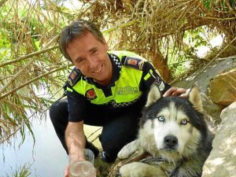

Alerta de seguridad para el rescate de un perro 'husky'

Alerta de seguridad para el rescate de un perro 'husky'
Mientras los alfareños iniciaban el viernes festivo en el encierro, un paseante de las tranquilas orillas del Alhama oyó unos gemidos de perro que le alertaron. Se trataba de un animal de la raza 'husky' atrapado en unas rocas. Avisada la Policía Local, varios agentes se personaron en el lugar. «Al tirar de él para sacarle de entre las piedras gruñía», explica Teo Basterra, jefe policial.
Dado que los agentes no habían vivido un rescate semejante y por las complicaciones de acceso y de la situación del can, se dio aviso al SOS 112. Así, acudió una dotación con tres bomberos del parque de Calahorra. Como nuevo apoyo acudieron al veterinario Eusebio Llorente, que aportó un bozal y un sedante, necesarios tras el mordisco leve que el animal propinó a un bombero.
Tras más de dos horas se logró el rescate del animal. Su pelo sucio y su sed delataban que llevaba al menos toda la noche atrapado. En estos días ha permanecido en Alfaro, pero nadie lo ha reclamado y, dado que no tiene chip, el Servicio de Recogida de Animales lo traslado ayer a Logroño.
Ahora está en una perrera de La Rioja, no dejemos que tras un trabajoso rescate sea sacrificado allí.
Si quieres más información escribe a: animalesrioja@gmail.com
Fuente: http://www.larioja.com/v/20110823/rioja-comarcas/alerta-seguridad-para-rescate-20110823.html
A la espera de un nuevo dueño
De su pasado nada se sabe, al igual que de los 2.529 perros abandonados recogidos en La Rioja sólo durante el pasado año (según un estudio de la Fundación Affinity). Su historia comenzó el pasado viernes 19 de agosto, cuando fue rescatado, tras quedar atrapado entre unas piedras de la orilla del río Alhama, por la Policía Local de Alfaro y los Bomberos de Calahorra. El dispositivo resolvió la imprudencia e irresponsabilidad del desconocido dueño del perro, que lo abandonó a su suerte.
El pasado lunes el Centro de Recogida de Animales de La Rioja trasladó al perro hasta el Centro de Acogida de Animales de Logroño y allí permanece desde entonces. Ahora comparte jaula con un pequeño mestizo. En el centro, actualmente hay unos cuarenta animales de todas las razas (mastín, 'doberman', 'setter', podenco...) y ahora se ha unido una más, el 'husky'. Sus profundos ojos azules impresionan, parecen reclamar que aquel no es su sitio. Y, aun así, ha tenido suerte. Podría haber muerto ahogado o de inanición o atropellado. Ahora, al menos, tiene la oportunidad de ser adoptado.
El 'husky' rescatado en Alfaro pesa unos 30 kilos y tiene aproximadamente cinco años. «Se muestra desconfiado, pero es normal porque está en un lugar que no conoce, tiene que acostumbrarse. No parece agresivo, desde luego», explica Carmela, la veterinaria del Centro de Acogida de Animales. «Al perro se le ve bien, solo con el pelo un poco descuidado, normal si lleva algunos días abandonado», declara la veterinaria. El anquilosamiento que sufría en las patas tras ser rescatado, fruto de haber permanecido atrapado, ha desaparecido. El 'husky', que no tiene nombre, parece sano y manso. Solo le falta que le sonría la suerte. Los responsables del centro son optimistas con él: «Al ser de raza tiene más salida, hay gente que busca este tipo de perros. Hace poco tuvimos cuatro cachorros de cruce de 'husky' y se adoptaron todos».
Cualquiera que desee adoptar a este perro puede acudir al Centro de Acogida de Animales de Logroño o llamar al teléfono 661 611 703. El animal deberá permanecer allí, al menos, ocho días a la espera de que lo reclame su dueño. De lo contrario, tendrá que esperar a uno nuevo que, si no aparece, provocará su sacrificio. «No lleva microchip y hay que ponerlo por ley, al igual que la vacuna de la rabia. La adopción es gratuita, solo hay que pagar la vacunación, la desparasitación y el microchip. Todo eso cuesta 87 euros», afirma Carmela. Quien se lo lleve, además, tendrá el honor de darle un nuevo nombre y una nueva vida al perro.
Comentarios
Laura
Lun, 29/08/2011 - 09:55
Permalink
Husky de Logroño
Hola
Siento el malentendido pero en casos tan mediáticos siempre suele ocurrir algo.
A mi cuando me mandaron el caso para difundir el contacto era animalesrioja@gmail.com, es decir, la Asociación Animales de La Rioja. Siempre estuve en contacto con ellos, me informaban y al ser los primeros pensé que eran ellos los que llevaban el tema.
Yo les pregunté por si sabían algo de los posibles adoptantes, acogidas y personas que pagarían una residencia que se decía en internet y ellos me dijeron lo que puse. Que APA Rioja no se puso en contacto con ellos y no había nada de eso.
Yo creo que sí es válido porque no es lo que circule por internet, es lo que me ha dicho el contacto que tengo del tema desde el primer momento ¿Y poqué no iba a creerles? Lo que veo es que no ha habido comunicación entre vosotros y cada uno le estais buscando adoptantes por separado, pero eso es cosa vuestra.
Gracias por informarnos.
Laura
Laura
Lun, 09/09/2013 - 20:21
Permalink
Ya está adoptado.
Ya está adoptado.
Añadir nuevo comentario